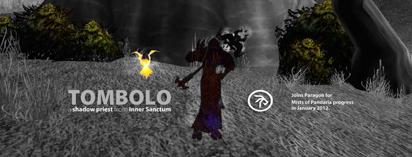
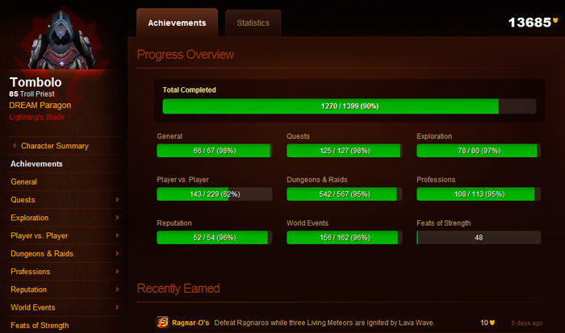
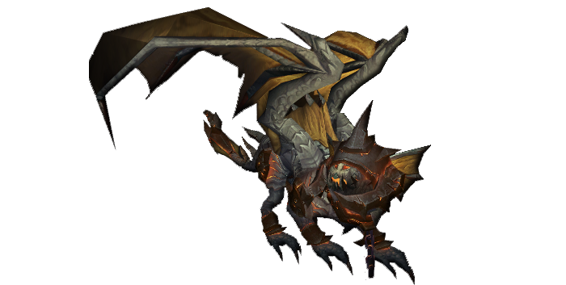

New Blood in Paragon: Tombolo interview

Lets start with the usual introduction chit-chat: Tell us a little bit about the person behind Tombolo.
The person behind Tombolo is a 22-years-old university student from the capital of Finland, Helsinki. Besides WoW, I enjoy swimming, skiing and traveling on my free-time.
You joined Paragon some time ago together with Daewyn from Inner Sanctum, a very old and well respected raiding guild. What prompted you to apply for Paragon?
Unfortunately the raiding situation at Inner Sanctum was a bit off after all the problems with progress race (bans etc.). Missing a few key players at the start of the progress was hard on the guild and lead to more people quitting, which affected the raiding atmosphere overall. When the guild decided to stop hc raiding for a while, I decided to apply to Paragon. One big reason for me was also the language of the guild, I’ve always enjoyed raiding more in Finnish guilds.
How was the recruitment progress: what was asked and how did you ensure Paragon of your superiority?
The recruitment progress was much “lighter” than I had thought. I contacted a Paragon officer, chatted with him for a while about myself and my WoW experience and got accepted for a trial. That was kind of a shock after the multipage application and a few hour vent interview which were needed when I applied to my previous guild, Inner Sanctum. Of course this time I had already been in a high end raiding guild which kind of proved that I have seen what it’s like to raid at the top.
Tombolo irl
Did you know anyone from the guild before you applied?
I didn’t. Obviously I knew the names of some players as Paragon is quite a big name in WoW circles, but I didn’t know anyone personally.
Have you heard any crazy stories about our members or the guild as a whole, and do you believe them?
I’m afraid I haven’t heard anything crazy about Paragon (yet) but I’m sure I’ll learn a story or two during my stay here if the guild is anything like the previous Finnish guilds I’ve been in..
Almost every top guild is recruiting before a new expansion to have a strong line-up once it hits. But between now and the release there is not much to do. How does it feel to join a guild in such a point in time?
It feels a bit weird and it surely is a challenge to get to know the players of a new guild as everyone is still pretty drained from the progress and isn’t playing WoW that much. On the other hand, it gives time to adjust to the new guild before the “real thing”, the release of MoP and new progress raiding.
Is it a “strange” feeling that the first chance to really prove yourself in progress lies so far ahead, like being in some sort of a void in the meantime.
It’s a new situation for me and of course it’s somehow weird to just “hang around” without having that strong connection to the guild yet. I think that you can give some proofs of your performance also during farm content, but obviously it’s nothing like real progress so you can’t really prove yourself to be a good progress player. Anyhow I’ve already been in a guild where progress raids can take 20+ hours straight so we’ll just wait and see how different things are here when MoP finally comes.
Paragon is currently going through a very low activity period, what do you do in WoW besides raiding one or two days a week?
I have to admit that I haven’t been doing much else lately. We had quite a harsh progress also in Inner Sanctum so raiding just a few times a week is fine with me. But besides raiding, some random bg:s, collecting Coins of Ancestry to get the Lunar Festival pet and doing Darkmoon Faire quests has been pretty much all I’ve been doing these last weeks.
Paragon, like every top guild, is having a well stacked alt roster. What is your alt or will be your alt once you roll it?
Until now, I’ve played the most with a warlock and a shaman alt. I’m pretty sure I’ll level a warlock also on this server and it will be my primary alt, but I think the picture will come clearer as MoP gets closer. Obviously the guild’s preferences are also a factor here.
You are quite an active achievement points collector, do you plan on going all out and collecting them all or are some just not worth the struggle for you?
I’ve always liked achievements and they’ve somehow been “my thing” since the release of the whole achievement system in WoW. My goal is to get as many of them as possible, but I’m not a total enthusiast about them. I’m always up for achievement runs, love collecting pets etc. and follow new seasonal events closely – but I’ll never farm Insane-title. One achievement category that has never been that fun for me is PvP which I don’t like that much in general. And about Feats of Strength, they’re not my thing either – if you don’t get points for it, you don’t want it.

Soon breaking 14k achievement points
For the first time in a long period Paragon did not get the World First on a final boss. How was it for you as a new member to come in at such a point in time?
The situation with long bans just before the start of progression made the race quite uneven and demoralized people. I’m sure that the next race will be feistier as long as all the guilds are able to start it at the same time.
How was the switch from an international and English speaking guild to an all Finnish environment in a guild?
There is a huge difference in international and national guilds (at least Finnish guilds) in my opinion. The biggest thing is that the communication during raids is easier and quicker when everyone speaks the same language. This improves performance by making it possible to react to changing situations as quickly as possible. A nice bonus is also that you can actually get to know the people you play with if you want to as they don’t live on the other side of the globe (or Europe). This affects the overall atmosphere as well, because it’s a totally different thing to raid with just names and voices than it is with actual faces.
Why are you playing a priest at the moment, and have you always had it as your main?
Shadow priest has always been my main, since the beginning of TBC when I started playing WoW. I’ve always liked the way a shadow priest works, I like dots as a game mechanics and ranged class overall – you can actually see something during boss combats. It’s also helpful that at tough places you are able to heal yourself, even though I’ve never really been a healer at raids. Shadowform is just too cool to throw it away.
Tell us about your gaming history?
I started playing WoW in the beginning of TBC. Back then I played in a small Finnish guild called Jäätikön sankarit, from where I still have some irl friends left. I’ve seen every fight from Karazhan to Dragon Soul and raiding and PVE have always been my main focus in WoW. Besides those achievements obviously.. Outside of WoW I like to play Zelda and a variety of board games.
What is your favourite boss fight?
My favourite boss fight in WoW is Illidan Stormrage. Maybe it was the fact that he was my first “big” boss fight, maybe it was the people I killed him with or maybe it was just the fact that the fight was great from the beginning to the end. I think Illidan had lots of different interesting game mechanics that really made the fight hard but at the same time didn’t make you want to kill yourself (like Atramedes did for me). Illidan was an epic fight and I haven’t felt the same way after any other boss kill.

Are you having trouble with separating different people on TS? Any hard ones to recognize?
I have always been terrible at recognizing different voices so yes, I am having lots of trouble recognizing anyone on TS. I can honestly say that at this point I can tell only from 5-10 people who they are by just listening to them.
If you had to promise Paragon's members one thing as a trial, what would it be?
I will give everything my best shot, as I think that’s the most any of us can do.
- Log in to post comments
Comments
Welcome to the spriest sisterhood with me and Kyy!
Tue, 28/02/2012 - 05:54
Does Kyy know that he is a sister?
Tue, 28/02/2012 - 06:50
Thank you! Looking forward to getting to know the sisterhood better.. :)
Tue, 28/02/2012 - 15:04
Typo in first picture? :D and wow she is beautiful!
Tue, 28/02/2012 - 07:30
once there were 3 female healers in my guild. how it ended? cat fights indeed. 1 guild rage quit, 1 game rage quit and one is still playing. funny times :)
Tue, 28/02/2012 - 18:24
Why the name Tombolo? You have a special love for beaches connecting a small island to the main land?
Mon, 05/03/2012 - 10:08
I'm happy that someone knows the true meaning of my name :) But in fact I actually like
the word more than its meaning, I learned it when I was young and it has some special
relevance to me. For one thing, our dog is also named Tombolo.
Wed, 07/03/2012 - 08:45
To be honest, being Italian the first thing that came to my mind is not the "true meaning" of the word, I did some research before asking you because I could be missing something, ad of course I did ;) In italy the word "tombolo" is the so-called "bobbin lace" (http://en.wikipedia.org/wiki/Bobbin_lace), or, in Italian, "merletto a tombolo". The "tombolo" is the instrument used to realise the lace. Maybe this meaning is connected to the word you learned when young? Anyway, nice choice, I like it (for what is worth!).
Wed, 07/03/2012 - 15:24
Well I had no idea about any lace stuff, I just knew it meant that thing between land and island (tombolo is an actual Finnish word meaning that). Anyhow, I do have some Italian relatives, so the connection goes there, too! And good to hear you like the name :)
Thu, 08/03/2012 - 16:17
Very nice for me, best of luck!
Tue, 06/03/2012 - 17:58